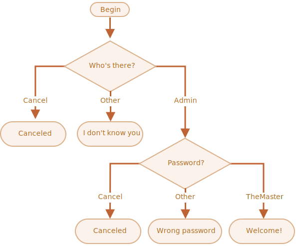

80-100, A
70-89, B
60-69, C
50-59, D
0-49, F
Get user input from prompt for the above question, and print result in alert box like "your grade is A "
September, October or November, the season is Autumn.
December, January or February, the season is Winter.
March, April or May, the season is Spring
June, July or August, the season is Summer
